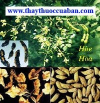

Cao huyết áp tuyệt đối không
nên kiêng những thứ này
Cao huyết áp tuyệt đối không
nên kiêng những thứ này

Tên khác
Tên dân gian: Hòe Thực (Bản
Kinh), Hòe Nhụy (Bản Thảo Đồ Kinh), Hòe nhụy (Bản Thảo Chính), Thái
dụng (Nhật Hoa Tử Bản Thảo), Hòe mễ, Hòe hoa mễ, Hoà trần mễ (Hòa
Hán Dược Khảo), Hòe hoa thán, Hòe mễ thán, Hòe nga, Hòe giao, Hòe
nhĩ, Hòe giáp (Trung Quốc Dược Học Đại Từ Điển). Hòe hoa, cây Hòe,
Hoa hòe

Tên khoa học: Sophora japonica Linn.họ Fabaceae.
Họ khoa học: họ Fabaceae.
Cây hoa hòe
(Mô tả, hình ảnh cây hòa hòe, phân bố, thu hái, chế biến, thành phần hóa học, tác dụng dược lý)
Mô tả:
Cây cao 7-10m, có khi tới 25m, nhánh nhỏ màu xanh lục, có lông hoặc không có lông. Lá lông chim lẻ, mọc so le, dài 15-25cm, lá chét 7-15 phiến, hình trứng hoặc hình trứng hẹp, dài 3-6cm, mép nguyên, mặt trên có lông và phấn trắng. Hoa nhỏ màu trắng xanh, mọc thành chùm ở ngọn, dài 15-30cm, quả đậu thắt lại ở giữa các hạt, chất nạc, chủng tử 1-6 hạt màu đen hình thận.Cây mọc hoang và được trồng khắp nơi trong nước ta, có nhiều ở miền Bắc Việt Nam. Trồng bằng hạt hoặc dâm cành.
Phân biệt:
Hoa hòe thường cánh hoa đã rơi rụng, nếu còn nguyên thì có 5 cánh hoa, mầu trắng vàng, rất mỏng, trong số đó hai cánh hoa tương đối to, hình gần tròn, đỉnh hơi lõm, cuộn lật ra phía ngoài, các cành hoa khác thì hình tròn dài. Phía dưới các cánh hoa có đài hoa hình chuông mầu lục. Giữa kẽ cánh hoa có các nhụy mầu vàng nâu, giống như những sợi râu và một nhụy hình trụ nhưng uốn cong. Chất nhẹ, khi khô dễ bị vụn nát, không mùi, vị hơi đắng.
Thu hái, sơ chế:
Vào mùa hè khi hoa sắp nở, Quả chín, thu hái trước hoặc sau tiết Đông chí phơi khô dùng. Hoa phải hái lúc còn nụ mới. Phơi hoặc sấy khô. Thứ hoa đầu sắp nở nhưng chưa nở, nguyên vẹn, không vụn nát, mầu vàng, không tạp chất là loại tốt.
Phần dùng làm thuốc:
1- Nụ hoa (Flos sophorae Japonicae).
2- Quả (Fructus sopharae Japonicae) Xem: Hòe giác.
Mô tả dược liệu:

Hoa hòe khô biểu hiện hình viên chùy ở búp, nhỏ dần ở bộ phận cuống, hoa, hơi cong, đài búp hoa hình chuông màu vàng lục chiếm cứ hầu hết cả búp hoa, trước mút búp chia làm 5 đường khe cạn, cánh hoa chưa được trưởng thành búp lại biểu hiện hình trứng tròn, bên ngoài màu vàng đỏ,toàn thể dài chừng 3,2m -10mm, chất nhẹ, hơi có khí vị đặc biệt. Nụ hoa màu vàng ngà không ẩm mốc, không bị cháy, không lẫn lộn cuống lá, tạp chất là thứ tốt.
Bào chế:
1- Dùng Hòe hoa phải dùng vào lúc hoa chưa nở, để lâu năm càng tốt. Khi dùng vào thuốc thì sao vàng để dùng.
2- Hái hoa lúc còn nụ, phơi hay sấy khô, dùng sống hay sao hơi vàng để pha nước uống, hoặc cho vào nồi đất đun to lửa sao cháy tồn tính 7/10, để cầm máu (Trung Dược Đại Từ Điển).
- Bỏ cành lá, lấy nụ hoa cho vào thuốc sắc uống, hoặc sao cháy thành than dùng hoặc tán nhỏ cho vào thuốc hoàn tán (Đông Dược Học Thiết Yếu).
- Hòe Hoa Sao: Lấy Hoa hòe sạch, cho vào nồi, sao bằng lửa nhẹ cho đến khi mầu hơi vàng, lấy ra để nguội là được (Dược Tài Học).
- Hòe Hoa Thán: Lấy Hoa hòe, cho vào nồi, dùng lửa mạnh đun nóng, sao cho đến khi gần thành mầu đen (tồn tính), phun ướt bằng nước sạch, lấy ra, phơi khô (Dược Tài Học).

Thành phần hóa học:
+ Rutin, Betulin, Soporradiol, Glucuronic acid (Trung Dược Học).
+ Azukisaponin, Soyasaponin, Kaikasaponin (Bắc Xuyên Huân, Dược Học Tạp Chí [Nhật Bản] 1988, 108 (6): 538).
+ Quercetin (Mộc Thôn Nhã Vệ, Dược Học Tạp Chí [Nhật Bản] 1984, 104 (4): 340).
+ Isorhamnetin (Ishida Hitoshi và cộng sự, Chem Pharm Bull 1989, 37 (6): 1616).
+ Betulin, Sophoradiol (Ngải Mễ Đạt Phu, Dược Học Tạp Chí [Nhật Bản] 1956, 76: 1210).
+ Dodecenoic acid, Myristic, Tetradecadieoic acid, Arachidic acid, Beta-Sitosterol (Mitsuhashi Tatsuo và cộng sự C A 1973, 79: 134385u).
Tác dụng dược lý:

+ Tác dụng cầm máu: Hoa hòe có tác dụng rút ngắn thời gian chảy máu. Nếu sao thành than, tác dụng mạnh hơn (Trung Dược Học).
+ Giảm bớt tính thẩm thấu của mao mạch và làm tăng độ bền của thành mao mạch (Trung Dược Học).
+ Tác dụng đối với hệ tim mạch: Chích dịch Hoa hòe vào tĩnh mạch cho chó đã được gây mê, thấy huyết áp hạ rõ. Thuốc có tác dụng hưng phấn nhẹ đối với tim cô lập của ếch và làm trở ngại hệ thống dẫn truyền. Glucozid ở vỏ của Hòe có tác dụng làm tăng lực co bóp của tim cô lập và tim tại thể cuae ếch. Hòe bì tố có tác dụng làm gĩan động mạch vành (Trung Dược Học).
+ Tác dụng hạ mỡ trong máu: Hòe bì tố có tác dụng làm giảm Cholesterol trong máu, Cholesterol ở gan và ở cửa động mạch. Đối với xơ mỡ động mạch thực nghiệm, thuốc có tác dụng phòng và trị (Trung Dược Học).
+ Tác dụng kháng viêm: Đối với viêm khớp thực nghiệm nơi chuột và chuột nhắt, thuốc đều có tác dụng kháng viêm (Trung Dược Học).
+ Tác dụng chống co thắt và chống loét: Hòe bì tố có tác dụng giảm trương lực cơ trơn của đại trường và phế quản, tác dụng chống co thắt của Hòe bì tố gấp 5 lần của Rutin. Rutin trong Hoa hòe có tác dụng làm giảm vận động bao tử của chuột, giảm bớt rõ số ổ loét của bao tử chuột do co thắt môn vị (Trung Dược Học).
+ Tác dụng chống phóng xạ: Rutin làm giảm bớt tỉ lệ tử vong của chuột nhắt do chất phóng xạ với liều gây chết (Sổ Tay Lâm Sàng Trung Dược).
+ Rutin trong Hoa hòe có tác dụng phòng ngừa tổn thương do đông lạnh thực nghiệm. Đối với tổn thương độ 3 càng rõ, đối với độ 1, 2 cũng có tác dụng (Sổ Tay Lâm Sàng Trung Dược).
+ Tác dụng chống tiêu chảy: Dịch Hoa hòe bơm vào ruột của thỏ thấy kích thích niêm mạc ruột sinh chất tiết dịch có tác dụng làm giảm tiêu chảy (Sổ Tay Lâm Sàng Trung Dược).
Vị thuốc hòe hoa - hòe mễ
(Tính vị, quy kinh, công dụng, liều dùng)
Tính vị

Hòe hoa vị đắng, tính hàn
Quy kinh
Qui kinh Can, Đại tràng.
Tác dụng:
+ Lương (làm mát) Đại trường nhiệt (Y Học Khải Nguyên).
+ Lương đại trường, sát cam trùng (Bản Thảo Chính).
+ Tiết Phế nghịch, tả Tâm hỏa, thanh Can hỏa, kiên Thận thủy (Y Lâm Toản Yếu).
+ Lương huyết, chỉ huyết, thanh lợi thấp nhiệt (Trung Dược Học).
+ Thanh nhiệt, lương huyết, chỉ huyết (Trung Dược Đại Từ Điển).
Chủ trị:
+ Trị năm loại trĩ, tâm thống, măt đỏ, trừ giun sán và nhiệt trong bụng, trị phong ngoài da, trường phong hạ huyết, xích bạch lỵ (Nhật Hoa Tử Bản Thảo).
+ Sao thơm, ăn được nhiều trị mất tiếng, họng đau, thổ huyết, chảy máu cam, băng trung lậu hạ (Bản Thảo CươngMục).
+ Trị tiêu ra máu, tiểu ra máu, chảy máu mũi (Bản Thảo Cầu Chân).
+ Trị tiểu đường và võng mạc mắt viêm (Đông Kinh Dược Vật Chí).
Liều dùng:8-20g/ngày.
Kiêng kỵ:
+ Không có thực hỏa, thực nhiệt cấm dùng. Kỵ sắt (Trung Dược Học).
+ Bệnh do hư hàn, không có nhiệt: không dùng (Đông Dược Học Thiết Yếu).
Bảo quản: Dễ bị mốc. Cần để nơi khô ráo, thoáng gió.
Bài thuốc có Hòe hoa trong điều trị:
+ Trị chảy máu không cầm: Hòe hoa, Ô tặc cốt, lượng bằng nhau, để nửa sống nửa sao, tán bột thổi vào (Phổ Tế Phương).
+ Trị thổ huyết không cầm: Hòe hoa đốt tồn tính, bỏ vào một tý Xạ hương vào, trộn đều. Mỗi lần dùng 12g uống với nước gạo nếp (Phổ Tế Phương).
+ Trị lưỡi chảy máu không cầm: Hòe hoa tán bột, xức vào (Chu Thị Tập Nghiệm Phương).
+ Trị ho ra máu, khạc ra máu: Hòe hoa sao, tán bột. Mỗi lần uống 12g với nước gạo nếp, cúi ngửa một lát thì đỡ(Chu Thị Tập Nghiệm Phương).
+ Trị tiểu ra máu: Hòe hoa sao, Uất kim (nướng), mỗi thứ 1 lượng tán bột lần 8g với nước sắc Đậu xị (Bí Tàng Phương).
+ Trị đại tiện ra máu: Hòe hoa, Kinh giới tuệ, các vị bằng nhau tán bột, uống lần 4g với rượu (Kinh nghiệm phương), hoặc dùng Trắc bá diệp 3 chỉ, Hòe hoa 6 chỉ sắc uống hàng ngày (Tập giản phương).
+ Trị đại tiện ra máu: Hòe hoa, Chỉ xác, các vị bằng nhau sao tồn tính tán bột, lần uống 8g với nước (Tụ Trân Phương).
+ Trị sốt cao đột ngột tiêu ra máu: Ruột heo sống 1 cái rửa sạch phơi khô, lấy Hòe hoa sao tán bột bỏ đầy vào trong ruột heo, lấy giấm gạo ngâm trong hũ sành nấu chín, làm viên bằng hạt đạn lớn phơi nắng, mỗi lần uống 1 viên lúc đói với rượu ngâm Đương quy (Vĩnh Loại Kiềm Phương).
+ Trị đi tiêu ra máu do độc của rượu: Hòe hoa nửa sống nửa sao 40g, Sơn chi tử 20g,tán bột uống lần 8g với nước (Kinh Nghiệm Lương Phương).
+ Trị lỵ ra máu, trĩ ra máu: Hòe hoa sao, tán bột, mỗi lầnuống 12g với rượu, ngày uống 3 lần hoặc dùng vỏ trắng của cây Hòe hoa sắc uống (Phổ tế phương).
+ Trị Rong kinh không cầm: Hòe hoa sao tồn tính, mỗi lần uống 8~12g với rượu nóng trước khi ăn (Thánh Huệ Phương).
+ Trị băng huyết không cầm:Hòe hoa 120g, Hoàng cầm 80g, tán bột. Mỗi lần uống 20g với một chén rượu (Càn Khôn Bí Uẩn Phương).
+ Trị trúng phong mất tiếng: Hòe hoa sao, sau canh ba nằm ngửa nhai nuốt (Thế YĐắc Hiệu Phương).
+ Trị ung thư phát bối, nhiệt độc ở trong người, hoa mắt, đầu váng, miệng khô, lưỡi đắng, hồi hộp, lưng nóng, tay chân tê, có sưng ở sau lưng: Hòe hoa một mớ, sao cho thành mầu nâu đen, ngâm với một chén rượu con, lúc rượu còn đang nóng thì uống, nếu chưa đỡ, uống tiếp, sau khi uống thì nhọt sẽ nhúm mủ lại (Bảo Thọ Đường Phương).
+ Trị trĩ ngoại:Hòe hoa sắc rửa nhiều lần và uống thì sẽ teo lên (Tập Giản Phương).
+ Trị độc nhọt lở sưng tấy, tất cả các loại ung nhọt phát bối, chẳng kể là có mủ hay chưa, nhưng có tấy sưng nóng đau: Hòe hoa sao qua, Hạch đào nhân đều 80g, Dấm 1 chén sắc uống. Nếu chưa đỡ thì uống 2 -3 lần, đã vỡ mủ thì uống 1 -2 lần thấy hiệu quả (Y Phương Trích Yếu Phương).
+ Trị phát bối tán huyết: Hòe hoa, Bột đậu xanh, mỗi thứ 40g sao như màu ngà voi, tán bột, dùng 40gTế trà sắc còn 1 chén, để ngoài sương một đêm, lấy 12g phết vào, chừa lỗ cho ra mủ (Nhiếp Sinh Diệu Dụng Phương).
+ Trị băng huyết, hạ huyết: Hòe hoa 40g, Tông lư thán 8g, Muối 1 ít, sắc với 3 chén nước còn nửa chén, uống (Trích Huyền Phương).
+ Trị bạch đới không dứt: Hòe hoa (sao), Mẫu lệ nung, các vị bằng nhau tán bột. Mỗi lần uống 12g với rượu (Trích Huyền Phương).
+ Trị độc dương mai và độc do dương minh tích nhiệt gây ra, dùng Hòe hoa 4 lượng sao qua bỏ vào 2 chén rượu sắc uống nóng, người bị hư hàn thì cấm dùng (Tập Giản Phương).
+ Trị thổ huyết: Hòe hoa 12g, Bách thảo sương 4g. Tán bột, uống với nước sắc rễ Tranh (Mao căn) (Lâm Sàng Thường Dụng Trung Dược Thủ Sách).
+ Trị trường phong hạ huyết:Hòe hoa, Trắc bá (đốt cháy), Chỉ xác đều 12g, Kinh giới 8g. Tán bột uống với nước hoặc làm thang tể. (đại tiện ra máu) (Hòe Hoa Tán - Lâm Sàng Thường Dụng Trung Dược Thủ Sách).
+ Trị huyết áp cao: Hòe hoa, Hy thiêm thảo, mỗi thứ 20 ~ 40g. Sắc uống (Lâm Sàng Thường Dụng Trung
Dược Thủ Sách).
Tìm
hiểu thêm về Hòe hoa
 Tính
vị:
Tính
vị:
+ Vị đắng, tính bình, không độc (Nhật Hoa Tử Bản Thảo).
+ Vị đắng, tính mát (Bản Thảo Cương Mục).
+ Vị đắng, tính hàn (Cảnh Nhạc Toàn Thư).
+ Vị đắng, Tính bình (Trung Dược Học).
+ Vị đắng, tính mát (Trung Dược Đại Từ Điển).
 Quy
kinh:
Quy
kinh:
+ Vào kinh Dương minh (Đại trường), Quyết âm (Can) (Bản Thảo Cương Mục).
+ Vào kinh thủ Dương minh (Đại trường), túc quyết âm (Can) (Bản Thảo Hối Ngôn).
+ Vào kinh Phế, Đại trường (Dược Phẩm Hóa Nghĩa).
+ Vàokinh Can, Đại trường (Trung Dược Học).
+ Vào kinh Can, Đại trường (Trung Dược Đại Từ Điển).
+ Hòe hoa thể nhẹ, màu vàng nhạt, khí bình hòa, vị đắng, khí lạnh mà trầm, có sức lượng huyết, tính khí mỏng màvị đầy, nhập vào 2 kinh Phế và Đại trường, manh nha vào tháng 2 tháng 3, tháng 4 tháng 5 mới bắt đầu nở, bắt đầu từ tháng Mộc mà sinh nhưng thành ở tháng Hỏa. Tính hỏa vị đắng, vị đắng thì có thể đi thẳng xuống mà vị hậu thì trầm xuống chủ về mát ruột và trị hạ huyết, các chứng trĩ lở sưng đau, có công lương huyết chỉ riêng ở Đại trường. Đại trường và Phế có quan hệ biểu lý, có thể sơ phong nhiệt ở bì phu, là tiết khí của Phế kim ra vậy (Biện Dược Chỉ Nam).
+ Hòe hoa là búp hoa của cây Hòe, Hòe thật là (quả đậu) của cây Hòe (Xem: Hòe thật), có tính vị và công dụng giống nhau. Người xưa có thuyết “Dùng hoa có tác dụng thăng lên, các loại hạt có tác dụng giáng xuống”. Chứng nghiệm trên lầm sàng thì Hèo hoa và Hòe thật có công dụng cầm máu. Mặc dù lấy dù lấy việc trị xuất huyết ở phần hạ bộ là chính, chẳng qua dùng Hòe hoa lại dùng trong các chứng thổ huyết chảy máu cam.. Như Phổ Tế phương trị chảy máu cam không cần với Hòe hoa và Ô tặc cốt. Còn trị thổ huyết không cầm, dùng Hòe hoa bỏ vào một tý Xạ hương, bài “Tôn Sinh Hòe Hoa Tán”, dùng một vị này cùng với Bách thảo sương tán bột, uống với nước rễ Tranh trị chảy máu cam, có thể nói rằng mặc dù thuốc rất đơn giản nhưng hiệu quả cao. Còn vị Hòe Thực có tính thiên về hạ giáng, dùng chủ yếu trong đi cầu xuống huyết thuộc hỏa thịnh ở đại trường, cho tới các loại ra máu ở trĩ lở thuộc thấp nhiệt ứ kết. Tóm lại 2 vị này đều có thể lương huyết chỉ huyết, lúc ứng dụng cũng cần phân biệt. Theo văn hiến ghi lại thì Hòe Thực có tác dụng trụy thai, thúc sinh cho nên phụ nữ có thai dùng một cách cẩn thận (Trung Dược Học Giảng Nghĩa).
+ Hòe hoa và Hòe Thực (Quả Hòe) đều là thuốc lương huyết, chỉ huyết. Ngày nay người ta thường hay dùng Hoa hòe. Hoa hòe vị đắng, tính mát, thể nhẹ, chủ chữa về xuất huyết ở các khiếu bên trên, thiên về miệng, mũi. Còn Hòe Thực vị đắng, tính hàn, thể nặng, là vị thuốc thuần âm, thiên về chữa huyết ở hâi kinh âm, chủ yếu trị trường phong hạ huyết, trĩ dò chảy máu (Đông Dược Học Thiết Yếu)
Nơi mua bán vị thuốc Hoa hòe đạt chất lượng ở đâu?
Trước thực trạng thuốc đông dược kém chất lượng, nguồn gốc không rõ ràng,... xuất hiện tràn lan trên thị trường, làm ảnh hưởng tới hiệu quả điều trị cũng như ảnh hưởng tới sức khỏe của bệnh nhân. Việc lựa chọn những địa chỉ uy tín để mua thuốc đông dược là rất quan trọng và cần thiết. Vậy khách hàng có thể mua vị thuốc Hoa hòe ở đâu?
Hoa hòe là vị thuốc nam quý, được sử dụng rộng rãi trong YHCT. Hiện tại hầu hết các cửa hàng thuốc đông dược, phòng khám đông y, phòng chẩn trị YHCT... đều có bán vị thuốc này. Tuy nhiên người mua nên chọn những địa chỉ có uy tín, đảm bảo chất lượng, có giấy phép hoạt động để mua được vị thuốc đạt chất lượng.
Với mong muốn bệnh nhân được sử dụng những loại dược liệu đúng, chất lượng tốt, phòng khám Đông y Nguyễn Hữu Toàn không chỉ là đia chỉ khám chữa bệnh tin cậy, uy tín chất lượng mà còn cung cấp cho khách hàng những vị thuốc đông y (thuốc nam, thuốc bắc) đúng, chuẩn, đạt chuẩn chất lượng. Các vị thuốc có trong tiêu chuẩn Dược điển Việt Nam đều được nghành y tế kiểm nghiệm đạt chất lượng tiêu chuẩn.
Vị thuốc Hoa hòe được bán tại Phòng khám là thuốc đã được bào chế theo Tiêu chuẩn NHT.
Giá bán vị thuốc Hoa hòe tại Phòng khám Đông y Nguyễn Hữu Toàn: 220.000vnd/1kg
Tùy theo thời điểm giá bán có thể thay đổi.
+ Khách hàng có thể mua trực tiếp tại địa chỉ phòng khám: Cơ sở 1: Số 481 lô 22 Lê Hồng Phong, Phường Gia Viên, Thành phố Hải Phòng
+ Mua trực tuyến: Thuốc được chuyển qua đường bưu điện. Khi nhận được thuốc khách hàng thanh toán tiền COD.
Tag: cay Hoa hoe, vi thuoc Hoa hoe, cong dung Hoa hoe, Hinh anh cay Hoa hoe, Tac dung Hoa hoe, Thuoc nam
Thaythuoccuaban.com Tổng hợp
*************************